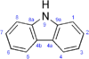

carbazole

Definition: Carbazole is an aromatic heterocyclic organic compound. It has a tricyclic structure, consisting of two six-membered benzene rings fused on either side of a five-membered nitrogen-containing ring. The compound's structure is based on the indole structure, but in which a second benzene ring is fused onto the five-membered ring at the 2–3 position of indole (equivalent to the 9a–4a double bond in carbazole, respectively).
Source: Wikipedia
Wikipedia Page
Wikidata Page